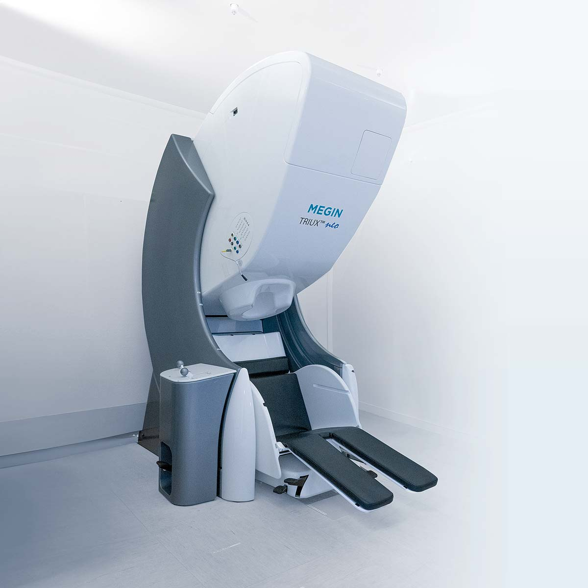

Victor Férat#
I’m really glad you’re here. I’m a software engineer and neuroscience researcher, and these days you’ll find me at the M/EEG & Neuromod (MEG) Platform of Campus Biotech in Geneva, where I work as a research engineer.
My job is to help researchers get their studies done. When someone comes to us with a project, I help them figure out which equipment suits their question and how to get the most out of it. Together with my team, I look after the MEG, EEG, and neuromodulation equipment, and we build tools that make life a little easier for the researchers we work with. And when a research group needs our expertise, we can also step in as consultants: we acquire the data, preprocess it, and analyze it for them.
I’m also passionate about open source, and this site is where I share that side of my work. You’ll find the projects I’ve been involved in, from research work to robust frameworks. I care a lot about clean code, efficiency, and the small details, and I hope that shows in each of them.
Whether you’re a fellow enthusiast, a potential collaborator, or an employer, I hope this gives you a good sense of what I do. I’d love to connect!
Victor

The platform’s MEGIN TRIUX neo MEG. © Campus Biotech Geneva Foundation.
What I work on#
Using EEG, the most affordable neuroimaging method, to develop neurofeedback interventions that could benefit both clinical and non-clinical populations.
Building robust analysis pipelines to ensure reproducibility and scalability in neuroimaging research.
Projects#
EEG
An open-source Python package for analyzing EEG microstates, designed to work with MNE-Python.
EEG
An open-source Python package for unsupervised EEG denoising based on leadfield filtering.
MEG
A BIDS app, currently under construction, that automatically prepares MEG and anatomical data for MEG source reconstruction.
EEG
A simple open-source Python package that provides I/O for most Cartool file formats, as well as additional computing features.
A script that creates 3D objects from an MRI segmentation file, with one object for each brain region of interest.
EEG neuromod
A pipeline that turns T1 MRI and EEG data into personalized brain stimulation parameters for the next day.
Contributions#
I work[ed] for them:#
Latest posts#
MEEG Pipelines (September 2026)
Data steward profile (April 2026)
GEDAI (October 2025)